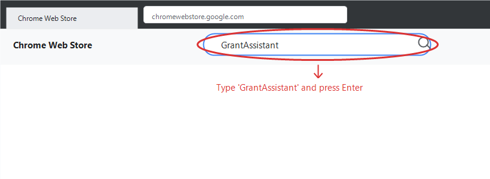
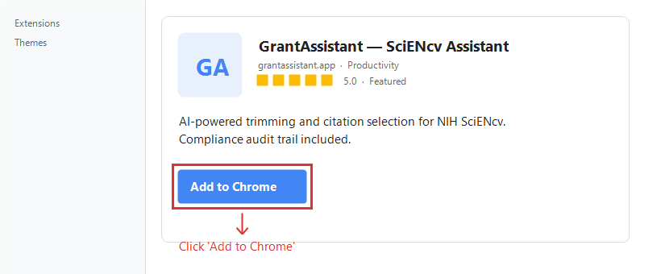
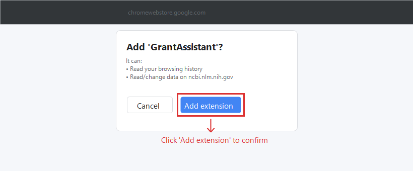
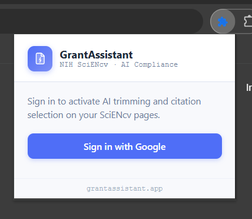
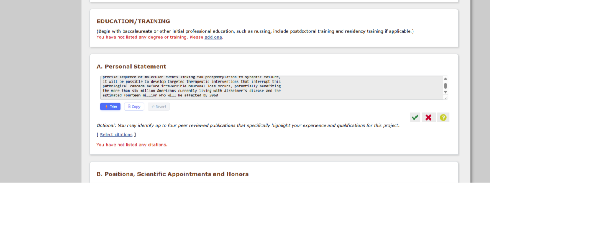
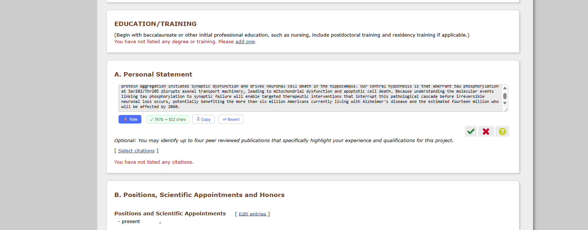
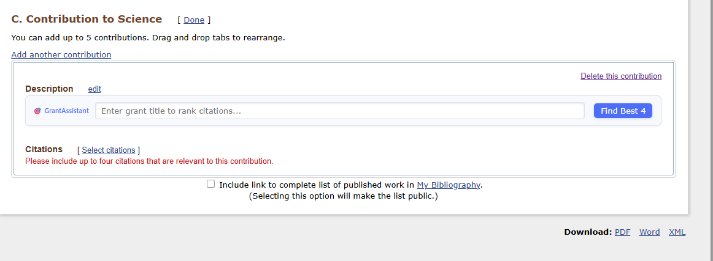
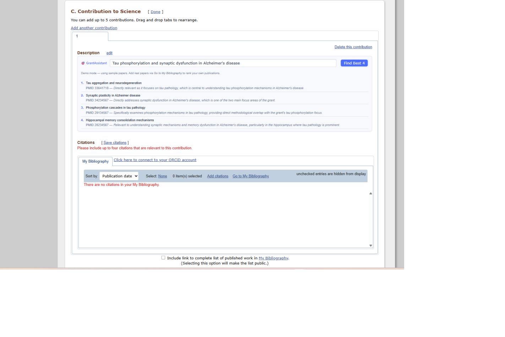
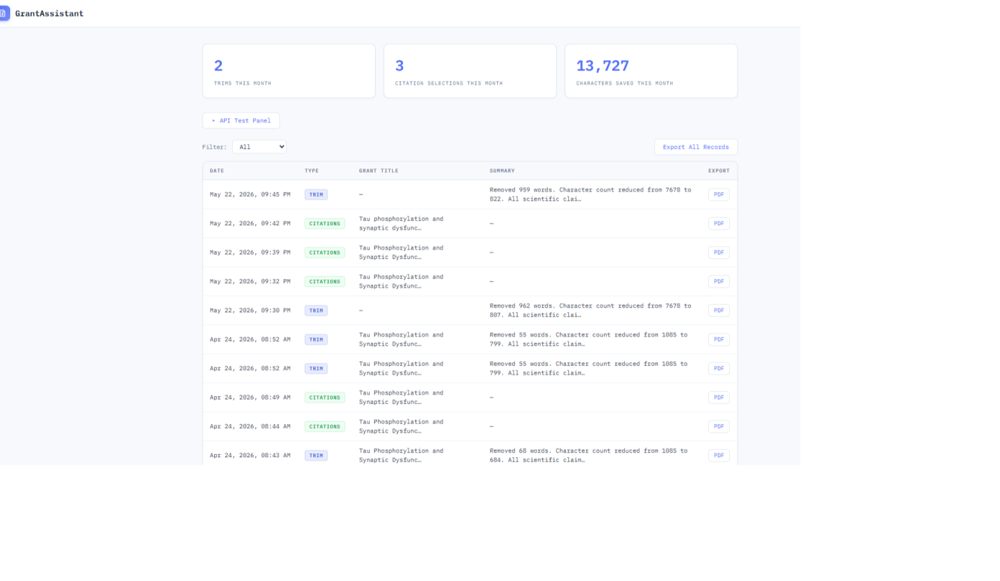

AI-powered text trimming and citation ranking for NIH SciENcv — with a built-in compliance audit trail.
SciENcv enforces strict formatting rules. GrantAssistant handles the tedious parts so you can focus on the science.
The Personal Statement allows only 2,500 characters. Cutting your own writing without losing key scientific claims takes hours.
Each Contribution to Science entry allows up to 4 citations. Picking the most relevant ones from dozens of papers is subjective and time-consuming.
If you use any AI assistance, NIH expects documentation. GrantAssistant generates a compliance PDF automatically — no extra work.
GrantAssistant installs in under two minutes directly from the Chrome Web Store. No configuration or sign-in needed before install.
Go to chromewebstore.google.com in Chrome. In the search box, type GrantAssistant and press Enter.

Type "GrantAssistant" in the search bar
Select GrantAssistant — SciENcv Assistant from the results. On the extension detail page, click the blue Add to Chrome button.

Click "Add to Chrome" on the extension listing
Chrome will show a permissions dialog. Click Add extension
to confirm. The extension only requests access to ncbi.nlm.nih.gov
— it cannot read any other website.

Click "Add extension" to confirm — takes only a moment
After installation, you'll see the GrantAssistant icon (📋) in the Chrome toolbar. If you don't see it, click the puzzle-piece Extensions icon and pin GrantAssistant to keep it visible.
Sign in once with Google. GrantAssistant remembers your session for 1 hour — you won't need to sign in again during a working session.

Click the GrantAssistant icon (📋) in your Chrome toolbar. The popup shows your current sign-in status.
A new tab opens with the Google OAuth sign-in flow. Sign in with any Google account — no university email required.
Once you complete sign-in, the tab closes and the popup shows your email address. You're ready to use GrantAssistant on any SciENcv page.
When your Personal Statement or Contribution to Science description is over the character limit, GrantAssistant condenses it — removing redundant phrasing while preserving every scientific claim, number, and citation.
Navigate to your biosketch at ncbi.nlm.nih.gov/myncbi. Click edit next to the Personal Statement or any Contribution to Science description.
As soon as the text area becomes visible, GrantAssistant injects a toolbar with three buttons: ⚡ Trim, ⎘ Copy, and ↩ Revert.

The Trim toolbar appears automatically below any editable text field
GrantAssistant sends your text to the AI, which removes words to bring it under the character limit. The text in the field is replaced in place. A success tooltip shows exactly how many characters were removed.

After trimming — the tooltip confirms the reduction (here: 7,678 → 822 chars) and Revert activates
Click the green ✔ check mark in SciENcv to save the field. The trim action is automatically logged to your audit trail.
Each Contribution to Science entry in Section C allows up to four citations. Given your grant title, GrantAssistant ranks your My Bibliography papers and highlights the best four — with a plain-English relevance reason for each.
Scroll to the C. Contribution to Science section of your biosketch. The GrantAssistant citation panel appears automatically above each contribution's citation list.

The 🎯 GrantAssistant panel appears above each Contribution to Science entry
Type the title of the grant you are applying for into the input box (e.g. "Tau phosphorylation and synaptic dysfunction in Alzheimer's disease") and click Find Best 4.
GrantAssistant returns the four most relevant papers from your bibliography, each with a one-sentence explanation of why it was selected. The papers are also highlighted directly in your bibliography list below.

Results panel showing the top 4 papers ranked by relevance to your grant title, with reasons
Use GrantAssistant's ranking as your guide, then check the papers in SciENcv's own citation selector and click Save citations. The ranking action is logged automatically to your audit trail.
Every Trim and Citation action is automatically logged. You can export individual records or your full history as a signed PDF — ready to share with your grants office or attach to your application.

The dashboard at grant-assistant-omega.vercel.app/dashboard — every action logged with one-click PDF export
Common questions from researchers.
No. The AI is instructed to remove words and shorten sentences only. It will not add new claims, change statistics, rename genes, or alter citations. You should always review the output before saving — use the ↩ Revert button instantly if anything looks wrong.
Yes, with disclosure. NIH's guidance (NOT-OD-23-149) permits AI use for administrative and formatting tasks when disclosed. GrantAssistant generates a compliance PDF for every action so you have that documentation ready.
No. The extension only injects UI on ncbi.nlm.nih.gov pages and
the GrantAssistant sign-in page. It has no access to any other website you visit.
Text you trim is sent to GrantAssistant's secure server (hosted on Vercel) which calls the Anthropic Claude API. Your text is used only to perform the trim and is stored in your audit record so you can export it. It is never used to train AI models.
The citation panel will still appear. When you click Find Best 4, GrantAssistant will let you know that your bibliography is empty and prompt you to add papers via the link to My Bibliography. Once you add papers, come back and run the ranker.
Yes. The ⚡ Trim button appears on any visible text area in SciENcv — including the description field for each Contribution to Science entry when you click "edit" on it.
Yes, it is free and open source. The source code is available on GitHub.